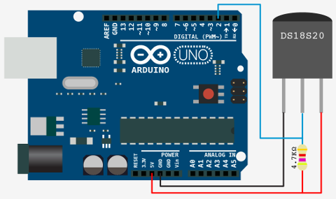

This example shows how to create a simple temperature monitor, using one computeur and one Arduino.
In this very simple case, the monitor (computer) will send each second a QtXBee::Wpan::TxRequest16 with data 'temp' to query the temperature. On each reception of this frame, the temperature sensor node will send back a QtXBee::Wpan::RxResponse16 and its data field will represent the temperature. On each reception of a QtXBee::Wpan::RxResponse16, the monitor will emit the temperatureReceived(float temperature) signal, which will update the UI.
Summary
Recipe
For this example, I used:
Electronic part
1-Wire bus
[Wikipedia] 1-Wire is a device communications bus system designed by Dallas Semiconductor Corp. that provides low-speed data, signaling, and power over a single signal. 1-Wire is similar in concept to I²C, but with lower data rates and longer range. It is typically used to communicate with small inexpensive devices such as digital thermometers and weather instruments. A network of 1-Wire devices with an associated master device is called a MicroLAN.
This scheme shows how to wire 1-Wire devices:
Here is the scheme I used to plug the DS18S20 to my arduino:

XBee shield hack
Because I only have one Arduino shield (XBee shield) on which I don't have access to power pins (5V, GND), I had to 'hack' it by soldering a header on the shield:
Final result:
XBee modules configuration
The temperature monitor node, will be the Coordinator, plugged to the computer. The temperature sensor node will be a End Device, plugged to the Arduino.
To be sure the modules will be able to comminicate, we should check their configurations:
| Parameter | Coordinator | Sensor | Description |
| MY | 0 | 2 | Node addr (16bits) |
| ID | 3332 | 3332 | Pan Id |
| AP | 1 | 1 | API mode |
Code
main.cpp
#include <QGuiApplication>
#include <QQmlApplicationEngine>
#include <QQmlContext>
#include "tempmonitor.h"
int main(int argc, char *argv[])
{
QGuiApplication app(argc, argv);
QQmlApplicationEngine engine;
TempMonitor monitor("/dev/ttyUSB0");
monitor.setTempSensorAddress(2);
monitor.start(1000);
engine.rootContext()->setContextProperty("monitor", &monitor);
engine.load(QUrl(QStringLiteral("qrc:/main.qml")));
return app.exec();
}
tempmonitor.h
#ifndef TEMPMONITOR_H
#define TEMPMONITOR_H
#include <QObject>
#include <QTimer>
namespace QtXBee {
class XBee;
namespace Wpan {
class RxResponse16;
}
}
class TempMonitor : public QObject
{
Q_OBJECT
Q_PROPERTY(float currentTemperature READ currentTemperature NOTIFY currentTemperatureChanged)
public:
explicit TempMonitor(const QString & serialPort, QObject * parent = 0);
~TempMonitor();
void setTempSensorAddress(const quint16 address);
float currentTemperature() const;
signals:
void temperatureReceived(float temperature);
void currentTemperatureChanged();
public slots:
void start(const uint pollingTime = 1000);
void stop();
private slots:
void timerTriggered();
private:
quint16 m_sensorAddr;
QTimer m_pollingTimer;
float m_currentTemp;
};
#endif // TEMPMONITOR_H
tempmonitor.cpp
#include "tempmonitor.h"
#include <XBee>
#include <wpan/TxRequest16>
#include <wpan/RxResponse16>
#include <wpan/TxStatusResponse>
#include <XBeeResponse>
#include <QDebug>
#include <cmath>
typedef union {
float value;
u_int8_t bytes[4];
} float_sensor_result;
TempMonitor::TempMonitor(const QString & serialPort, QObject *parent) :
QObject(parent),
m_xbee(NULL),
m_sensorAddr(0xFFFF),
m_currentTemp(0.0)
{
bool xbee_success = false;
xbee_success = m_xbee->setSerialPort(serialPort);
Q_ASSERT(xbee_success);
xbee_success = m_xbee->open();
Q_ASSERT(xbee_success);
connect(&m_pollingTimer, SIGNAL(timeout()),
this, SLOT(timerTriggered()));
}
TempMonitor::~TempMonitor()
{
}
float TempMonitor::currentTemperature() const
{
return m_currentTemp;
}
void TempMonitor::setTempSensorAddress(const quint16 address)
{
m_sensorAddr = address;
}
void TempMonitor::start(const uint pollingTime)
{
m_pollingTimer.start(pollingTime);
}
void TempMonitor::stop()
{
m_pollingTimer.stop();
}
void TempMonitor::timerTriggered()
{
m_xbee->sendAsync(&req);
}
{
QByteArray data;
float_sensor_result result;
float temperature;
if(data.size() == 4) {
memcpy(&result.bytes, data.data(), 4);
temperature = result.value;
qDebug("Temp: %f°C", temperature);
m_currentTemp = temperature;
emit temperatureReceived(temperature);
emit currentTemperatureChanged();
}
else {
qDebug() << "Invalid packet received";
}
}
main.qml
import QtQuick 2.4
import QtQuick.Window 2.2
import "qchartjs"
import "qchartjs/QChart.js" as Charts
import "monitor.js" as Monitor
Window {
visible : true
width : 800
height : 480
Column {
anchors.fill : parent
spacing : 20
anchors.margins : 20
Text {
id : title
width : parent.width
text : "Current temperature : " + parseFloat(monitor.currentTemperature).toFixed(1) + "°C"
color : "#DCDCDC"
horizontalAlignment : Text.AlignHCenter
}
QChart {
id : tempChart
width : parent.width
height : parent.height - title.height - parent.spacing
chartAnimated : true
chartAnimationEasing : Easing.InOutElastic
chartAnimationDuration : 2000
chartData : Monitor.MonitorData
chartType : Charts.ChartType.LINE
}
}
Connections {
target : monitor
onTemperatureReceived : {
Monitor.appendData(parseFloat(temperature).toFixed(1));
tempChart.requestPaint();
}
}
}
monitor.js
var MonitorData = {
labels: [],
datasets: [
{
fillColor: "rgba(220,220,220,0.5)",
strokeColor: "rgba(220,220,220,1)",
pointColor: "rgba(220,220,220,1)",
pointStrokeColor: "#ffffff",
data: []
}
]
}
var MaxElements = 20;
function appendData(data) {
if(MonitorData.datasets[0].data.length >= MaxElements) {
MonitorData.datasets[0].data.splice(0, 1);
MonitorData.labels.splice(0, 1);
}
MonitorData.datasets[0].data.push(data);
MonitorData.labels.push(Qt.formatDateTime(new Date(), "hh:mm:ss"));
}
Arduino's code
#include <XBee.h>
#include <OneWire.h>
#define PAYLOAD_SIZE sizeof(float)
typedef union {
float float_variable;
uint8_t bytes_array[4];
} float_sensor_result;
uint8_t *data = NULL;
size_t data_len = 0;
uint8_t option = 0;
uint8_t payload[PAYLOAD_SIZE] = {0};
int DS18S20_Pin = 2;
OneWire ds(DS18S20_Pin);
XBee xbee = XBee();
XBeeResponse response = XBeeResponse();
Rx16Response rx16 = Rx16Response();
Rx64Response rx64 = Rx64Response();
Tx16Request tx = Tx16Request(0x0, &payload[0], PAYLOAD_SIZE);
float getTemp(bool * success = NULL);
void setup() {
Serial.begin(9600);
xbee.setSerial(Serial);
}
void loop() {
bool temp_success = false;
xbee.readPacket();
if (xbee.getResponse().isAvailable()) {
if (xbee.getResponse().getApiId() == RX_16_RESPONSE || xbee.getResponse().getApiId() == RX_64_RESPONSE) {
if (xbee.getResponse().getApiId() == RX_16_RESPONSE) {
xbee.getResponse().getRx16Response(rx16);
option = rx16.getOption();
data = rx16.getData();
data_len = rx16.getDataLength();
} else {
xbee.getResponse().getRx64Response(rx64);
option = rx64.getOption();
data = rx64.getData();
data_len = rx64.getDataLength();
}
if(NULL != data) {
Serial.println("Received");
Serial.write(data, data_len);
Serial.println("");
if(strcmp((char*)data, "temp") == 0) {
Serial.println("Temp request");
float temp = getTemp(&temp_success);
if(!temp_success) {
Serial.println("Failed to get temperature !!!");
return;
}
Serial.print("Temp: ");
Serial.print(temp, sizeof(float));
Serial.println("°C");
float_sensor_result res;
res.float_variable = temp;
memcpy(&payload, &res.bytes_array[0], PAYLOAD_SIZE);
xbee.send(tx);
}
}
else {
Serial.println("Failed to get data");
}
}
else {
}
}
else {
}
}
float getTemp(bool * success) {
bool l_success = false;
byte l_data[12] = {0};
byte l_addr[8] = {0};
byte l_msb = 0;
byte l_lsb = 0;
float temperature = 0.0;
if ( !ds.search(l_addr)) {
Serial.println("No sensor found!");
ds.reset_search();
goto exit;
}
if ( OneWire::crc8( l_addr, 7) != l_addr[7]) {
Serial.println("CRC is not valid!");
goto exit;
}
if ( l_addr[0] != 0x10 && l_addr[0] != 0x28) {
Serial.print("Device is not recognized");
goto exit;
}
ds.reset();
ds.select(l_addr);
ds.write(0x44,1);
ds.reset();
ds.select(l_addr);
ds.write(0xBE);
for (int i = 0; i < 9; i++) {
l_data[i] = ds.read();
}
ds.reset_search();
l_msb = l_data[1];
l_lsb = l_data[0];
temperature = ((l_msb << 8) | l_lsb);
temperature /= 16;
l_success = true;
exit:
if(NULL != success) {
*success = l_success;
}
return temperature;
}